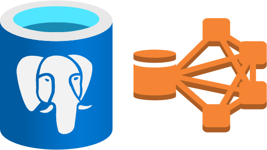
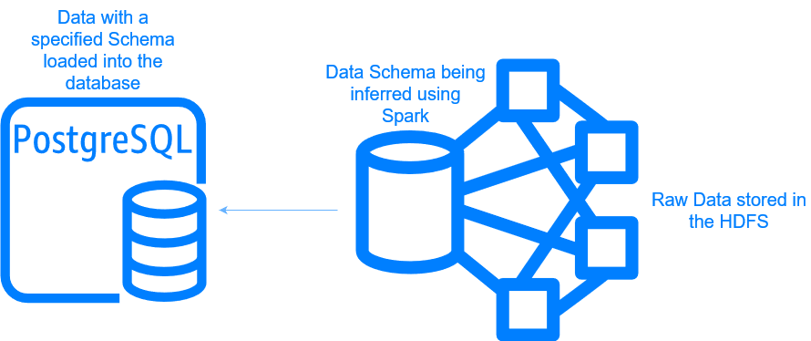

Integrating HDFS and PostgreSQL through Apache Spark.
inferSchema tool in conjunction with the HDFS to streamline PostgreSQL database schema/table creation.
Introduction
The HDFS (Hadoop Distributed File System) and PostgreSQL databases are both powerful tools for data storage, queries and analyses. Each have their own unique strengths that make them well suited for specific tasks.
The HDFS, being distributed across several computing nodes, is robust and amenable to storing massive datasets, provided your computing infrastructure has the prerequisite width (the number of nodes in your cluster) and the depth(the available memory on each individual node). The HDFS is optimized for batch processing of massive datasets, making it suitable for big data applications like data warehousing, log processing, and large-scale data analytics. In fact, Spark, the HDFS’ natural companion, has it’s own machine learning library MLlib, making large scale data analytics very much possible.
PostgreSQL databases, on the other hand, are robust RDBMS optimized for ACID (Atomicity, Consistency, Isolation, Durability) compliance. It provides robust data security and access control mechanisms, making it suitable for applications that require strict data protection. PostgreSQL supports SQL, a powerful query language that enables efficient querying and retrieval of data based on specific criteria. PostgreSQL shines at handling structured, transactional workloads that require data integrity, consistency, and complex querying capabilities.

Why connect the two?
The ability to trivialize Data Ingestion.
Spark has a tool called inferSchema. This is a function that allows for the input schema of data to be automatically inferred. It allows for more flexibility and easier data ingestion, especially when working with semi-structured or unstructured data formats. Provided your input data is cleaned up, the schema dictated by inferSchema is very reliable. It makes specifying the schema for a dataset with a large number of columns easy! This eliminates the need for manually defining the schema, which can be a time-consuming and error-prone process, especially when dealing with datasets containing a large number of columns or complex data structures.
Once this data has it’s schema specified, connecting a HDFS to a PostgreSQL database allows for the rapid, trivial loading of data into database tables.
This helps streamline the Data ingestion process as follows:
Data storage in HDFS: The raw data files (e.g., CSV, JSON) are stored in the HDFS, which provides distributed storage and fault tolerance.
Schema inference with Spark: Spark reads the data from the HDFS and automatically creates the schema when using
inferSchema. This process ensures that the schema accurately reflects the structure of the input data, especially if it has been cleaned up or transformed.
Even if your data isn’t clean to begin with, Spark allows for the data to be cleaned and then written back out into the HDFS, and inferSchema will ensure the schema of the table is accurate when this file is read back in.
- Loading data into a PostgreSQL database: With the schema inferred by Spark, the data can be easily loaded into PostgreSQL database tables.
And just like that, PostgreSQL gains the ability to ingest data from a wide range of semi-structured or unstructured data sources stored in a HDFS cluster quickly and reliably.

Connecting HDFS to a PostgreSQL database
The prerequisites
This tutorial assumes you have the following prerequisites set up:
Hadoop Distributed File System (HDFS): You have HDFS installed and running on your cluster. HDFS will serve as the distributed storage system for your data files.
Apache Spark: You have Apache Spark installed and configured to run on your cluster. Spark will act as the data processing engine to read data from HDFS and load it into PostgreSQL.
PostgreSQL Database: You have a PostgreSQL database instance up and running, either on the same cluster or a separate server. This is the target database where you want to load your data from HDFS.
Downloading the PostgreSQL JDBC driver
Find the PostgreSQL JDBC driver that is appropriate for your Java version and download it. The JDBC driver provides a standard API for Java applications (like Spark) to interact with relational databases. For example, if you’re using PostgreSQL 14.x and Java 8, you might download the postgresql-42.x.x.jar file.
wget https://jdbc.postgresql.org/download/postgresql-xx.x.x.jarOnce you have the jar file downloaded, place it in the jars folder of your Spark installation.
Edit your spark-env.sh file (which can be found in the conf folder) to have the following line:
export SPARK_CLASSPATH=/path/to/spark-x.x.x-bin-hadoop3/jars/postgresql-xx.x.x.jar Now restart your HDFS cluster, YARN, and MapReduce services to ensure the changes take effect. You can typically do this by running the stop-all.sh and start-all.sh scripts provided with your Hadoop installation.
Connecting PySpark to PostgreSQL
The following code chunk makes the following assumptions. Change them to suit your use case:
The host name of the server that runs the PostgreSQL database is postgres.server.
The port on which PostgreSQL is listening is 5432 (the default port).
The name of the database you want to load the tables into is postgres.
The name of the user who has connection and write privileges on that database is user.
The password for that user is password.
The raw data (that has been cleaned) is named data_file, and is a CSV file. This data type can be anything that’s loaded on the HDFS, just remember to change the type of reader being used.
# Assumptions and configurations
data_file = "/path/to/data_file.csv" # Replace with the actual path to your data file on HDFS
table_name = "your_table_name" # Replace with the desired table name in PostgreSQL
# Read the data from HDFS
data = spark.read.csv(data_file,
header=True,
sep=',',
inferSchema=True) # inferSchema=True will automatically infer the schema
# PostgreSQL database connection details
jdbc_url = "jdbc:postgresql://postgres.server:5432/postgres"
properties = {
"user": "user",
"password": "password",
"driver": "org.postgresql.Driver"
}
# Write the data to the PostgreSQL table
data.write.jdbc(url=jdbc_url, table=table_name, mode="overwrite", properties=properties)This code chunk will:
Read the data in, and automatically create a schema. The
spark.read.csv()method is used to read the data from the specified CSV file located on HDFS. It assumes that the file has a header row, and the columns are separated by commas. TheinferSchema=Trueoption tells Spark to automatically infer the schema (column names and data types) from the data.Set up a connection to your PostgreSQL database. The
jdbc_urlvariable specifies the JDBC connection string for the PostgreSQL database, including the hostname, port, and database name. The properties dictionary contains the user credentials (username and password) and the PostgreSQL JDBC driver class name.Write the data to the database with the name
table_name. Thedata.write.jdbc()method is used to write the Spark DataFrame (data) to the specified PostgreSQL table. Theurlparameter specifies the JDBC connection URL, thetableparameter specifies the target table name, and themode="overwrite"option tells Spark to overwrite the table if it already exists. Thepropertiesparameter passes the connection properties, including the user credentials and driver class name.
With this integration between HDFS, Apache Spark, and PostgreSQL, you can efficiently ingest and process large volumes of data stored in the HDFS and load it into your PostgreSQL database. Leveraging Spark’s powerful data processing capabilities and its ability to automatically infer schemas streamlines the data ingestion process, making it more efficient and flexible. By combining the strengths of these two data storage systems, you can unlock new possibilities for storing and analyzing large datasets.